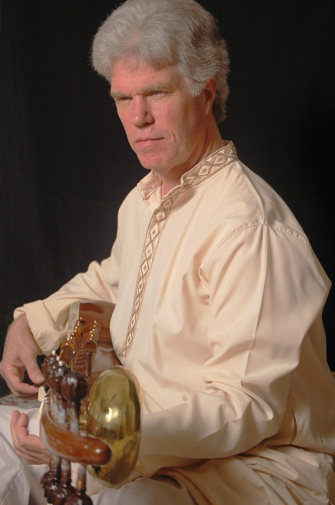
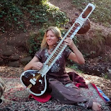

YouTube Channel
Watch sarod performances and music from Bruce Hamm on his YouTube channel.

YouTube Channel
Watch more performances and music from Joanna Mack on her YouTube channel.
On Stage
Watch breathtaking performances and concert footage directly from their channels.

Watch sarod performances and music from Bruce Hamm on his YouTube channel.

Watch more performances and music from Joanna Mack on her YouTube channel.